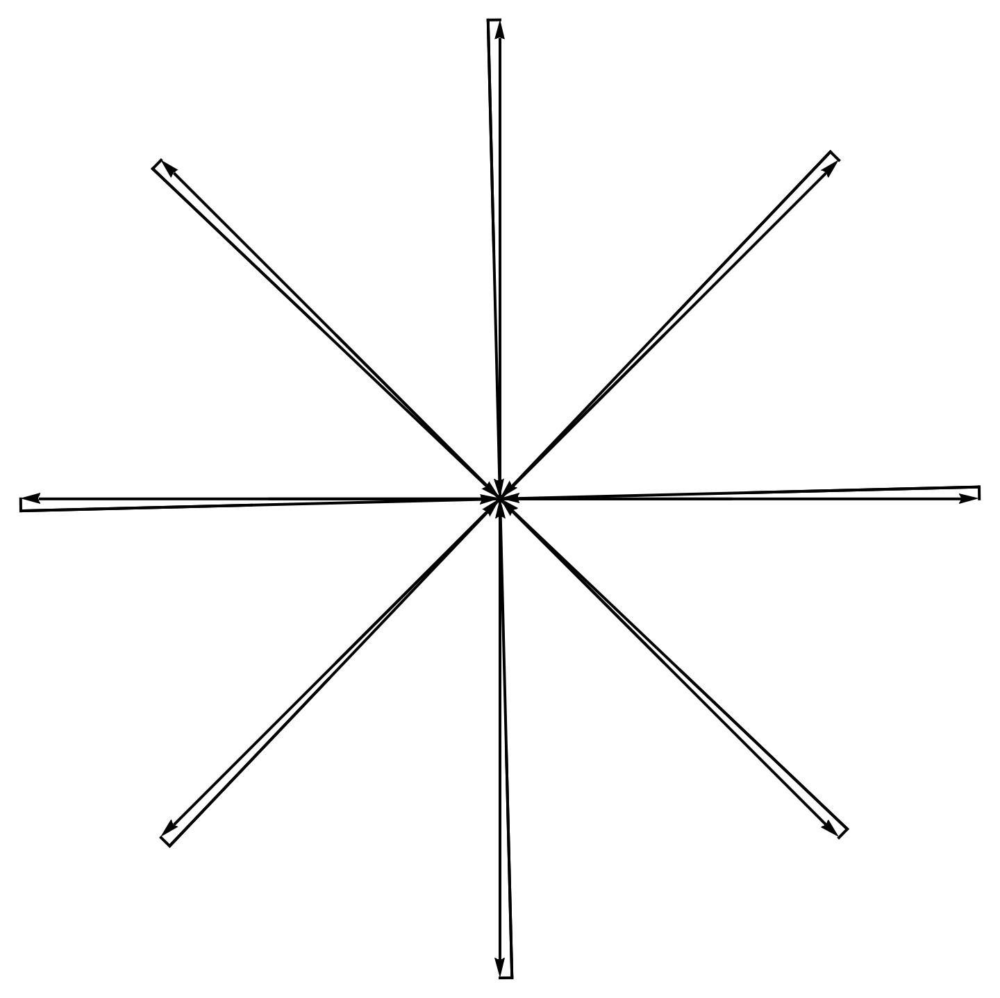

The multiple area derivatives of \( \Psi \) yield a formula
Here \( L(r_C, r_k, r_C) \) is a double line from the center of mass \( r_C = \sum_{k=1}^n r_k/n \) to each point \( r_k \) and back to \( r_C \). The whole loop \( C \) looks like bicycle spokes without a wheel. The angles \( \theta_1, \dots, \theta_n \) are ordered on the unit circle.

These double lines cancel in the circulation \[ \Gamma_C[v]=0, \] but not in the momentum loop representation. This happens because in the momentum loop \[ \int d\theta\, \vec{C}'(\theta)\cdot \vec{P}(\theta) \] the momentum variable depends on \( \theta \) directly, so the two line integrals in a double line do not cancel.
The factor \( \frac{n!}{(2 \pi)^n} \) comes about as follows. In the velocity representation, the circulation is zero, and the vorticities \[ \vec{\omega}(\vec{C}(\theta_k)) = \vec{\omega}(\vec{r}_k) \] depend directly on \( \vec{r}_k \) but not on the angles \( \theta_k \). Thus, the integral over ordered thetas yields the factor \[ \frac{(2 \pi)^n}{n!}, \] which we have to compensate by the inverse factor.
This leads to the basic formula for the multiple correlation functions of vorticity:
This formula expresses the multiple correlation functions in terms of the expectation value of the Euler ensemble. This is how we compute in migdal2024quantum the \( \VEV{\omega\, \omega} \) correlation as a function of relative distance in the case \( n=2 \). The correlation function in Fourier space \[ \VEV{\vec{\omega}(k)\cdot\vec{\omega}(-k)} \] (the energy spectrum) came out positive and real.
We conclude that the whole statistics of the rotational part of the velocity field (i.e., vorticity) is related to the statistics of the solutions \(\vec{P}(\theta, t)\) of the MLE.